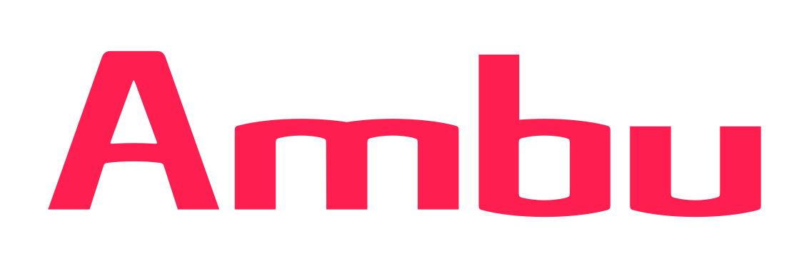

Ranglister Medicin & medtech Ambu

Ambu
Et blik på de samme fund, ikke en ny score. Sådan virker det
Kort fortalt
Bjarvik ser en medicinalteknisk forretning til lavere pris end før, men med svagere vækst (score 78 af 100). Mest ned trækker, at vækstprognosen er sænket to gange, at fortjenesten er lav for branchen, og at konkurrencen har givet prisindrømmelser. Kursmålene ligger kun ca. 2 % over kursen. Op trækker, at økonomichefen har købt aktier, og at selskabet køber egne aktier tilbage. Hold øje med toldrefusioner, der løfter marginen.
En stærk score: modellen fandt få alvorlige problemer, men analytikerne ser begrænset opside herfra.
Største fradrag
- Multipler mod egen historik og peers−7
- Guidance−4
- Margin−3
Styrker
- Insiderkøb+2
- Tilbagekøb+2
- Nettokasse+1
Sådan er scoren bygget op
Fra 100 til 78, trin for trin: point trækkes fra for forretningen, prisen og revnerne, lægges til for dokumenterede styrker, og så følger tre datajusteringer.
Hold musen over et trin eller vælg det for at se, hvad der drev det. Trin med fund åbner dem nedenfor.
Nøgletal
Pr. 6 nov. 2026. Analytikernes kursmål er ofte optimistiske; læs opsiden som et fingerpeg, ikke en prognose.
- Pris
- 87.60 DKK
- Analytikernes mediankursmål
- 89.00 DKK
- Opside til median
- +1.6%
- Analytikere
- 8
- Kursmålsinterval
- 72.00 – 115.30 DKK
- 52-ugers ændring
- +5%
- P/E (historisk)
- 35.6
- Forward P/E
- 25.9
- PEG
- 0.60
Fund
Hvert fradrag og hvert plus med sin kilde. Åbn et trin for at læse dem.
Forretning
Bliver virksomheden stærkere, ikke bare større? · 4 fund−9 af −30
- −3MarginDriftsmarginen er faldet fra 13,0 % (2024/25) til 11,3 % TTM, og den justerede EBIT-margin var 12,5 % i Q3 mod 15,2 % og 14,5 % i Q1 og Q2. En bruttomargin på 60 % bliver til en lav driftsmargin for medtech (Stryker: 23,8 %).
- −3ROICROIC er 9,0 % TTM, under WACC på 11,7 % og ned fra 11,2 % i 2024/25. Tallet var 2,0–8,9 % i 2021/22–2023/24, så selskabet har aldrig tjent sine kapitalomkostninger stabilt.
- −2Vækstens kvalitetEndoskopi (64 % af omsætningen) voksede 16 % organisk i Q3, men anæstesi og patientmonitorering er kun +1,3 % over 12 måneder. Den rapporterede vækst i kroner var kun 4,7 % TTM på grund af den svage dollar.
- −1Indtjeningens kvalitetHelårsmarginen i den øvre ende af 12–14 % hviler delvis på refusioner af told: 85 mio. kr. modtaget efter Q3, og yderligere 70 mio. kr. kan komme. Ledelsen venter en løbende toldomkostning på ca. 1 procentpoint af marginen før refusioner næste år.
Pris
Dagens multipler mod selskabets egen historik og dets sammenlignelige selskaber. · 1 fund−7 af −35
- −7Multipler mod egen historik og peersForward P/E 24,1 mod 33–92 i 2020/21–2024/25; EV/EBITDA 19,1 mod 26–107; P/FCF 24,5 mod 37–48 i 2022/23–2024/25.Det er det laveste i selskabets historik, men historikken er oppustet af år med næsten ingen indtjening. Mod peers er Ambu stadig dyrere end Stryker (forward P/E 17,2, EV/EBITDA 15,9), der har dobbelt så høj margin. (Den gamle liste brugte PEG, som ikke hører til i T2.)
Revner
Cash flow, kunder, gæld, insidere, guidance og det, der ligger bag hovedtallene. · 4 fund−12 af −35
- −4GuidanceDen organiske vækstguidance for 2025/26 er sænket for anden gang i år (Ritzau): den 25/8 fra 10–12 % (sat 6/5) til ca. 10 %, fordi anæstesi og patientmonitorering nu kun ventes at vokse lavt enkeltcifret. (Den gamle liste skrev 'tre gange'.)
- −3Kunderne bevæger sigEfter prisstigningerne mistede Ambu volumen hos udvalgte anæstesikunder, jf. Q2-regnskabet. Effekten ses nu i 12-måneders-tallene. Ledelsen siger, at der ikke er mistet flere kunder i Q3.
- −3Konkurrence (urologi)Konkurrencen i urologi er skærpet. Ambu har givet prisindrømmelser på aScope 4 Cysto hos udvalgte kunder og ambulante kirurgiske centre (strategisk prissætning under det tidligere niveau). Effekten på bruttomarginen vil ledelsen ikke kvantificere, og analytikerne spørger til øgede kommercielle investeringer.
- −2Valuta og toldDen svage dollar er ifølge CFO'en den største eksterne modvind for marginen. Varer fra Malaysia pålægges 10 % told i USA, og kontrakterne har typisk ingen automatisk prisregulering.
Plus
Kun dokumenterede styrker. · 3 fund+5 af +15
- +2InsiderkøbCFO Henrik Skak Bender købte 10.000 aktier til ca. 62 kr. (620.000 kr.) den 7/5-2026. Der er ingen insidersalg.
- +2TilbagekøbEt tilbagekøb på ca. 300 mio. kr. er gennemført (4,49 mio. aktier til gns. 66,78 kr.) og udvidet i september. Tilbagekøb (274 mio. kr.) og udbytte (110 mio. kr.) ligger TTM under FCF på 737 mio. kr.
- +1NettokasseNettokassen er 126 mio. kr. (gæld 579 mio. kr., kontanter 705 mio. kr.). Det er beskedent i forhold til en markedsværdi på 18 mia. kr., men giver frihed.
Forbehold
Det, scoren ikke fanger, eller hvor dataene er svage.
Også i Medicin & medtech
De højeste scorer i samme branche.